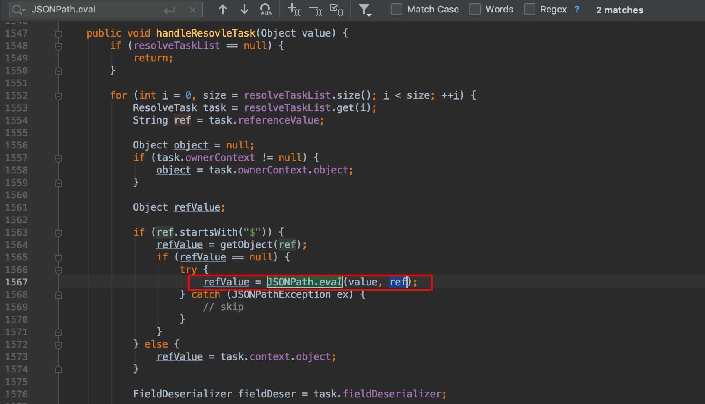
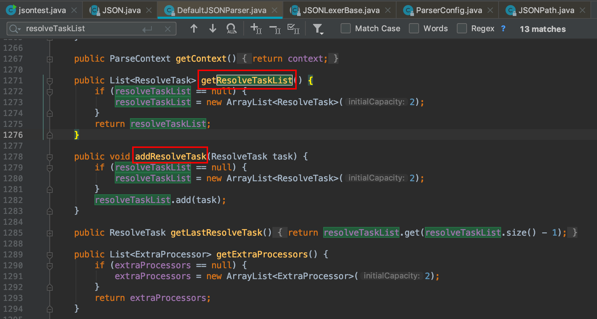
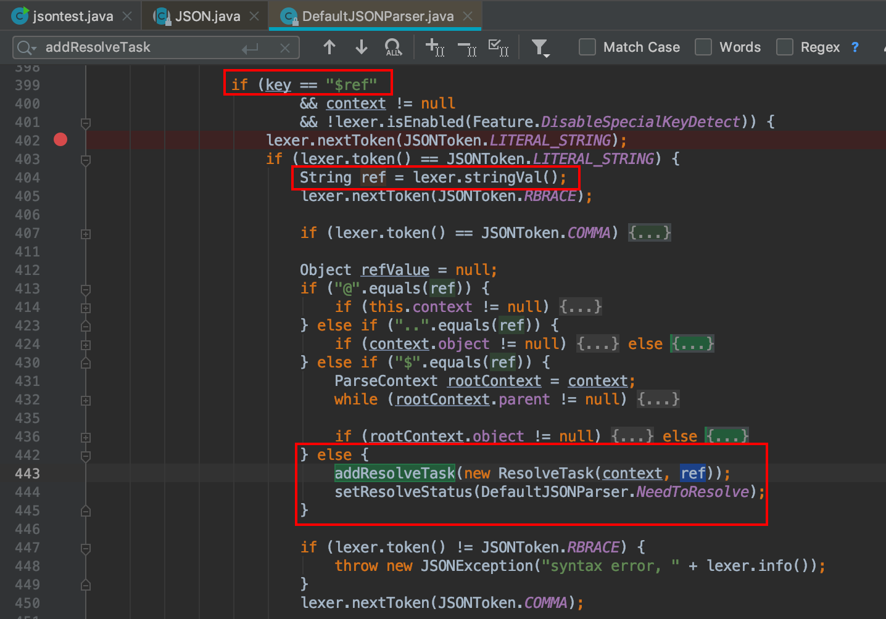
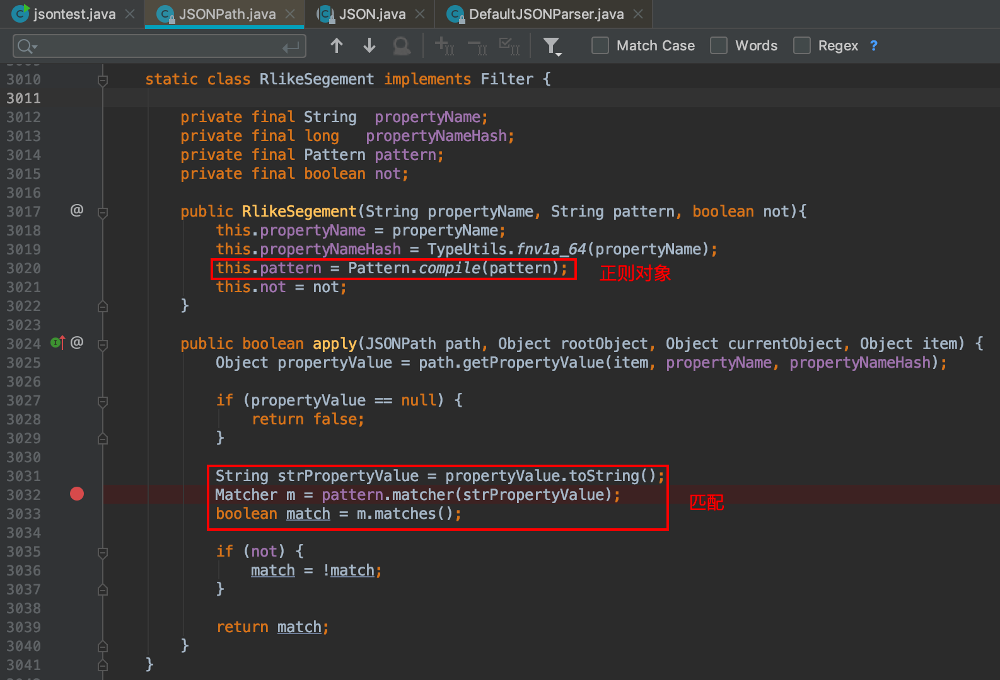
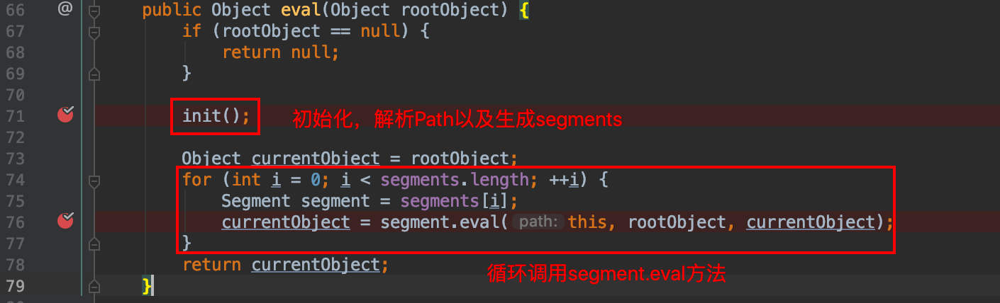
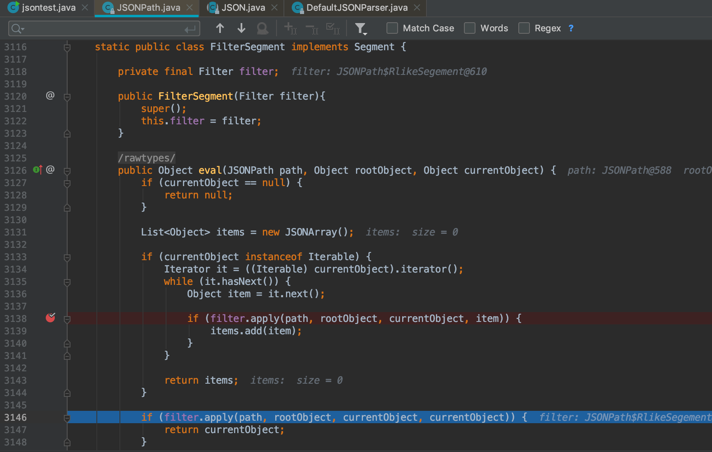

无意翻到b1ue大佬挖 fastjson 的拒绝服务漏洞的文章，影响范围 1.2.36~1.2.62 ，于是跟了一下漏洞原理和触发流程，按照自己的理解简单地从结果出发开始分析。
以下复现均是在1.2.62
漏洞缘由
首先要说明的这是一个正则DOS引起的拒绝服务，最根本的原理如下
1 | String p = "^[a-zA-Z]+(([a-zA-Z ])?[a-zA-Z]*)*$"; |
接着看一下 fastjson 中如何使用到正则，fastjson 1.2.0 之后的版本支持 JSONPath ，可以在java框架中当作对象查询语言（OQL）来使用。
1 | Object body = JSONPath.eval("{\"html\": {\"body\": \"bob\"}}", "$.html['body']"); |
JSONPath 匹配中可使用正则表达式，看到官方文档有如下说明：
| [key like ‘aa%’] | 字符串类型like过滤， 例如$.departs[name like ‘sz*’]，通配符只支持% 支持not like |
| [key rlike ‘regexpr’] | 字符串类型正则匹配过滤， 例如departs[name like ‘aa(.)*’]， 正则语法为jdk的正则语法，支持not rlike |
因此如果传入的正则表达式可控可能会导致拒绝服务
1 | Object result = JSONPath.eval("{\"dos\":\"aaaaaaaaaaaaaaaaaaaaaaaaaaaa!\"}", "[dos rlike '^[a-zA-Z]+(([a-zA-Z ])?[a-zA-Z]*)*$']"); |
JSON.parse 到 JSONPath.eval
如果是使用了 JSONPath 的 rlike 实现正则表达式的匹配，那么只要正则表达式可控就直接导致拒绝服务。但是现实项目业务逻辑中很少会直接使用 JSONPath 这个模块，更别说传入的正则表达式可控了。因此需要在常规的JSON.parse 中找到一个JSONPath的调用链。
1 | String json = ""; |
JSON#parse函数里主要涉及三个函数，DefaultJSONParser初始化会把整个字符串进行JSON对象的转换，而parse会进入 DefaultJSONParser#parseObject 处理JSON对象。
1 | DefaultJSONParser parser = new DefaultJSONParser(text, config, features); |
DefaultJSONParser.java 中搜索关键词 JSONPath.eval

找到 DefaultJSONParser#handleResovleTask 函数中调用了 JSONPath.eval(value, ref)
value 参数是参数传入的，ref 是从 resolveTaskList 中获取，与此相关的是比较重要的就是 addResolveTask

搜索 addResolveTask 接着就跟到了 DefaultJSONParser#parseObject 399行

可以看到当满足 key == "$ref" 、ref 不等于"@"、".."、"$" 直接进入了这个 else 分支， ref原封不动的装进了ResolveTask。
再回过去看到第一个图片，ref 第一个字符需要为 $
1 | if (ref.startsWith("$")) { |
到这里已经可以推出payload（出自b1ue）
1 | { |
JSONPath.eval 到 Matcher.matches
从 matches 出发找到触发点 JSONPath#RlikeSegement apply方法

而 RlikeSegement 的创建是通过判断传入的 Path 字符串是否有 rlike 的OP值
1 | Filter filter = null; |
回过头来看一下 JSONPath.eval() 的具体流程

其中 segment.eval 有许多实现方法，但因为 RlikeSegement 是实现了 Filter 接口的类，因此 RlikeSegement 调用的是 FilterSegment#eval ，可以看到这里调用了 filter.apply 对应了 RlikeSegement#apply

其实可能大部分内容都和b1ue大佬写的差不多，只是这里按照自己的理解从结果“反推”的方式大致分析这个拒绝服务漏洞。当然整个过程其中很多参数提取、变化等细节是需要亲自的调试琢磨的，有兴趣也可以看看b1ue原文分析是怎么挖掘到这个漏洞。
参考文章
https://b1ue.cn/archives/314.html